| 日付 | 2026年4月25日（土） |
|---|---|
| 山域 | 足尾 |
| メンバー | 単独 |
| 山行形態 | 日帰り |
| アクセス | 車 |
| ルート (Map) | 群界尾根登山口 (7:57) - (8:57) 石祠 - (9:44) 後袈裟丸山 - (10:09) 中袈裟丸山 - (11:15) 奥袈裟丸山 - (12:15) 中袈裟丸山 (12:24) - (12:49) 後袈裟丸山 - (13:17) 前袈裟丸山 (13:26) - (14:45) 群界尾根登山口 |
ここ最近、ロングコースを歩いていなかったので、
久々に長めのコースを歩いてみることにする。
天気予報は快晴。ツツジが咲くことで有名な袈裟丸山を選択。
妻と登る予定であったが直前でキャンセルとなり、単独行になる。
群界尾根登山口の駐車場に車を停める。標高1135m。
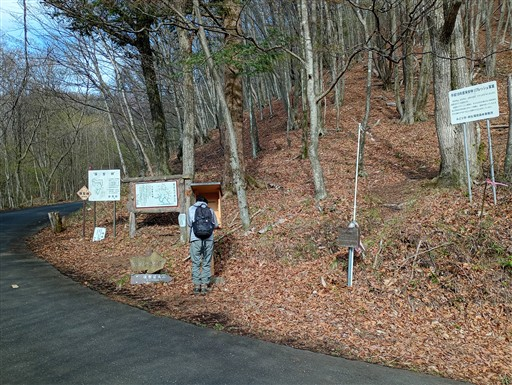
最初は階段の道から始まる。
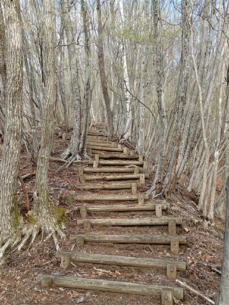
八重樺原に到着。
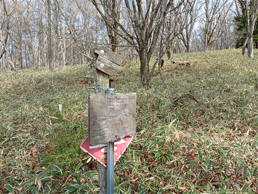
ここは尾根が広がり、美しい景色が広がる。
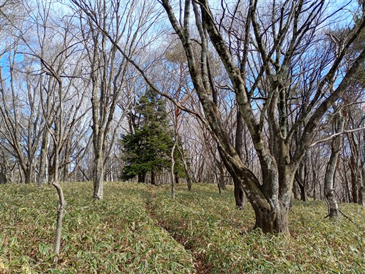
天気予報は快晴だったが雲が多く、あまり天気が良くない。
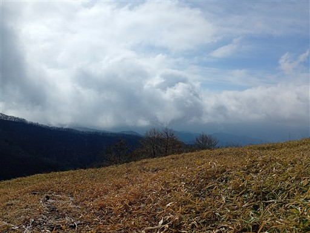
登山道から袈裟丸山が見える。
真中が最初の目的地の後袈裟丸山。右は前袈裟丸山だ。
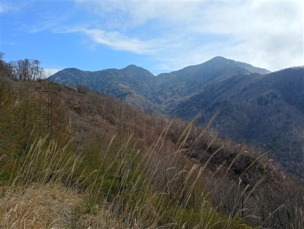
カラマツの新芽。かわいらしい姿だ。
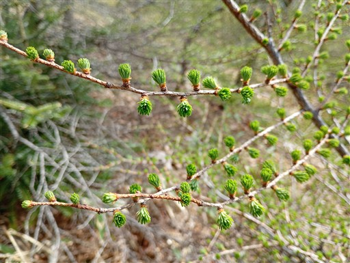
歩きやすい尾根道が続く。
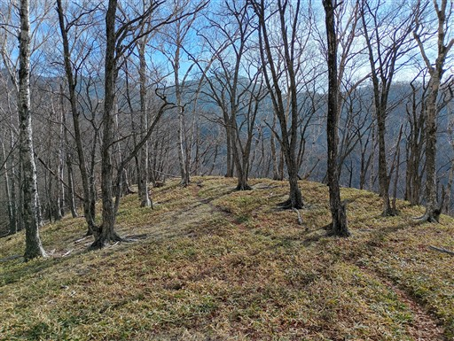
つつじ岩の石柱。
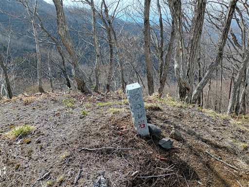
この辺りからチラホラとアカヤシオが見られる。
久々のアカヤシオだ。
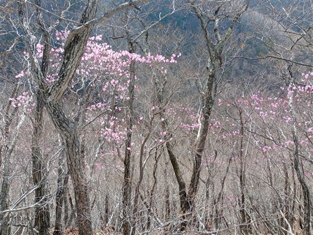
快適な尾根道は続く。
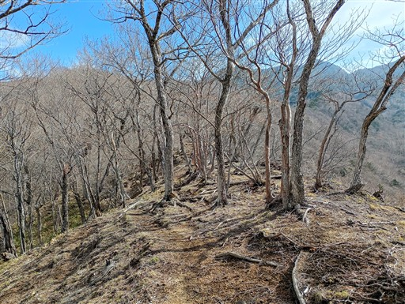
大好きなアカヤシオの花。美しいピンク色だ。
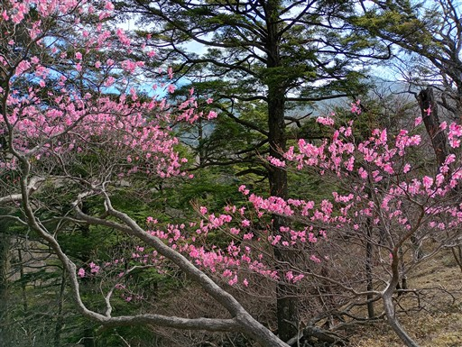
標高を上げると蕾が多くなってくる。まだまだ花期は続きそうだ。
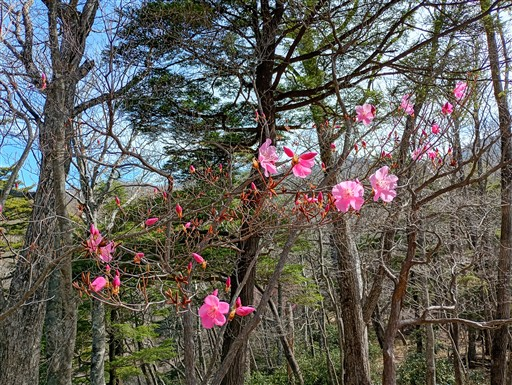
シャクナゲ地帯に突入。
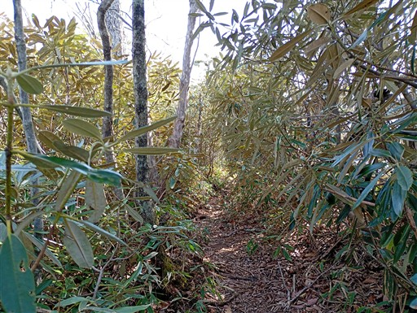
立派な石祠がある。ちょうど中間点辺りだ。
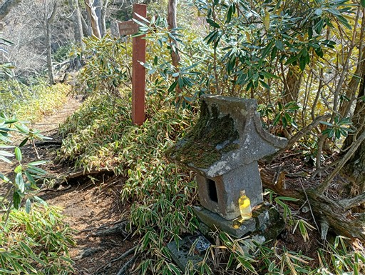
ここからは針葉樹林が多くなる。
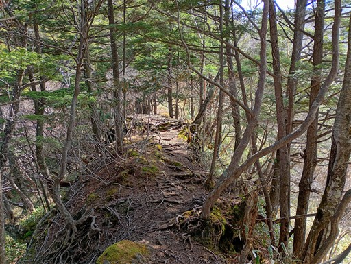
ちょっとした岩場。
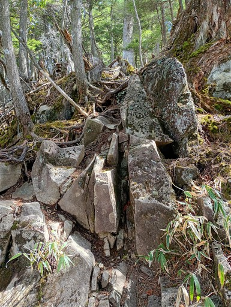
途中で展望が広がる。袈裟丸連峰を望む。
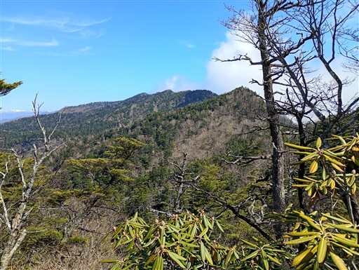
その左には雪を被った山々。中央は至仏山だ。
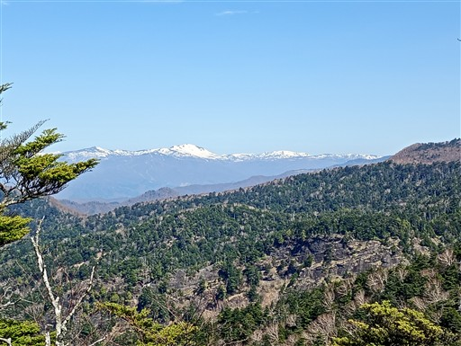
後袈裟丸山に到着。標高1910m。
本日は少し速足で歩いてきたが、ここまでは非常に順調だ。
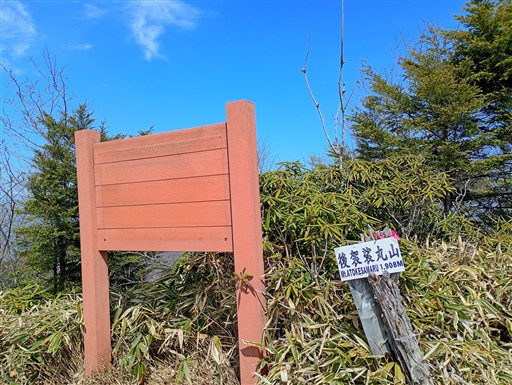
ここから北に延びる尾根を奥袈裟丸山まで歩く。
魅力的な尾根道だ。
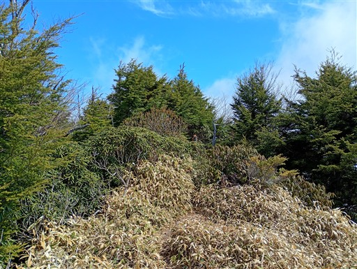
思ったよりも道が細い。シャクナゲが繁茂していて邪魔だ。
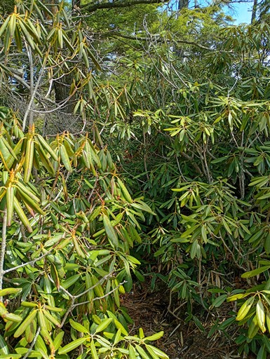
本日は栃木側が完全に雲に覆われている。展望が良いのは群馬側のみだ。
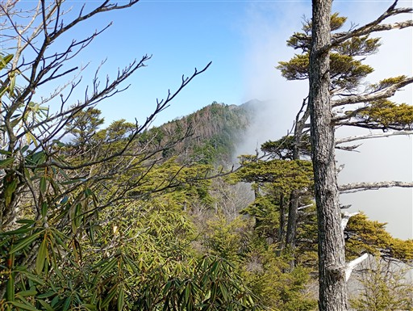
笹藪。足元に踏み跡はあるが、思った以上に藪が濃い。
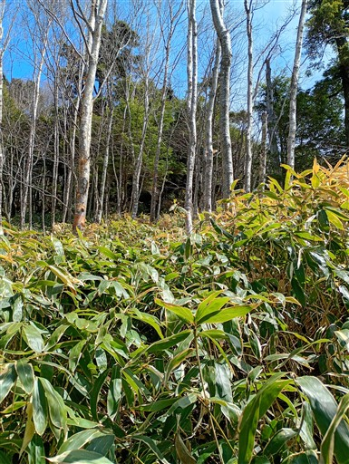
中袈裟丸山に到着。藪のせいでスピードが出ない。
奥袈裟丸山まではまだまだ距離があり、ちょっと心配になる。
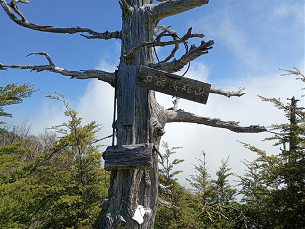
いきなり急斜面の下り。この尾根、結構狭い尾根で、急峻なアップダウンもある。
全般的に難易度の高い尾根だ。
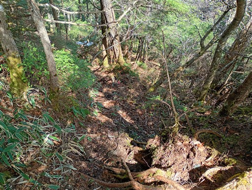
笹原。背が低いのでこの辺りは歩きやすい。
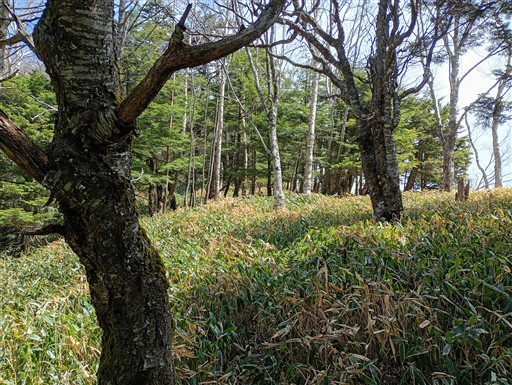
岩場。設置ロープは無い。
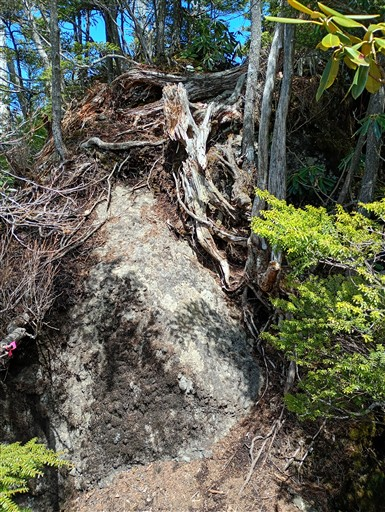
展望の良さそうな場所があったので登ってみる。
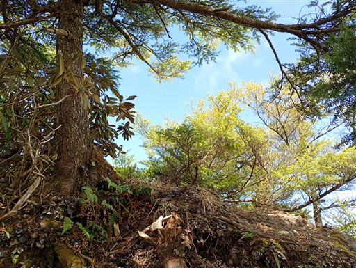
ここからは素晴らしい展望が広がる。
右に至仏山、正面は武尊山だ。
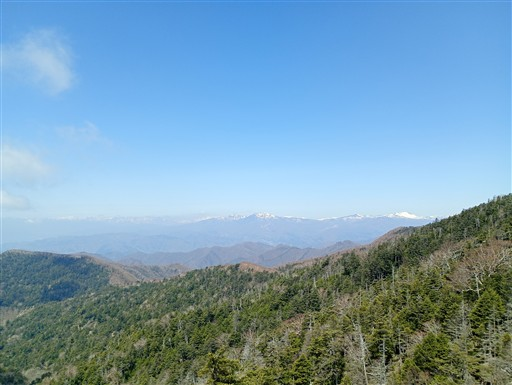
袈裟丸山の西に広がる裾野。
登山道も無ければ、山行記録もほぼ無い山々だ。
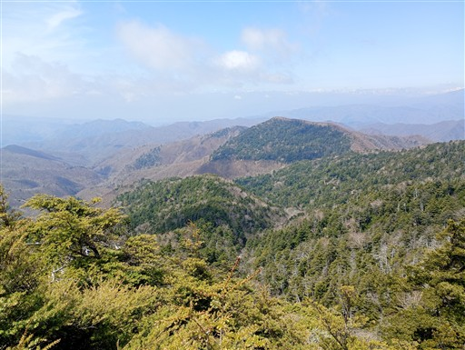
これから進む尾根道。正面がおそらく目指す奥袈裟丸山だろう。
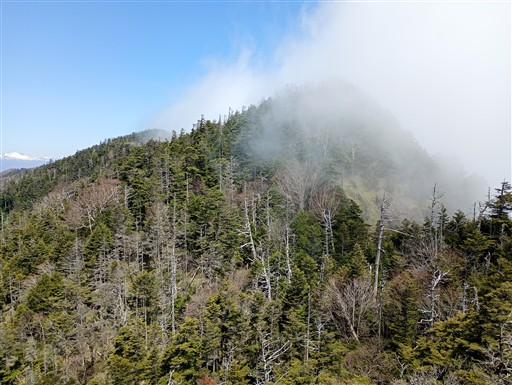
雪の付いた急斜面。ステップはあるが慎重に下る。
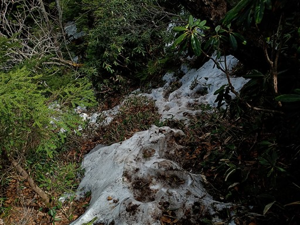
まさに原生林という雰囲気。
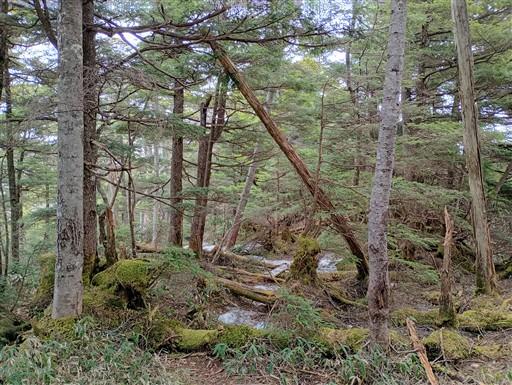
シャクナゲの藪。何の問題もなく通過できそうに見えるが、そうではない。
シャクナゲの枝は堅いので体に当たって痛い。
枝に押されてバランスを崩すと、スリップして危険だ。
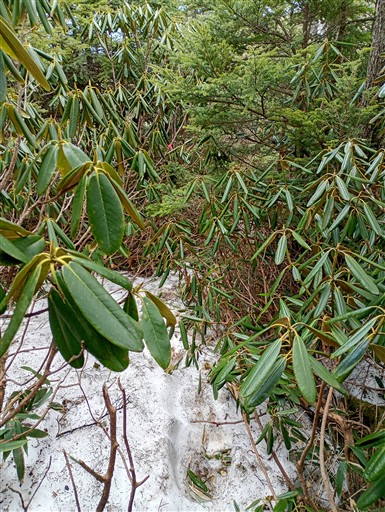
急峻な地形。いくつかこのような場所がある。
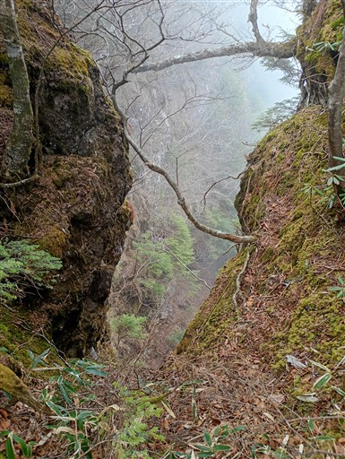
苦労してようやく奥袈裟丸山に到着する。標高1961m。
数ある袈裟丸山連峰のピーク中の最高峰だ。
山頂は非常に狭く、展望もない。
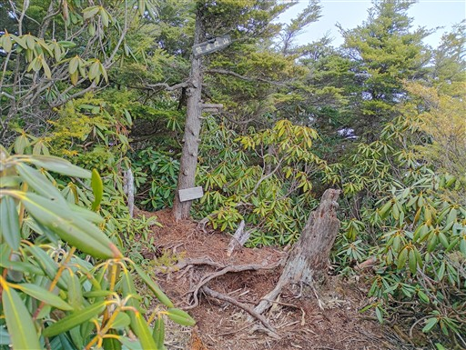
復路も苦労する。全体的に雲に覆われ、展望は全くなくなってしまった。
かなり大変な尾根道だったが、4グループぐらいの人とすれ違う。意外に人気の尾根だ。
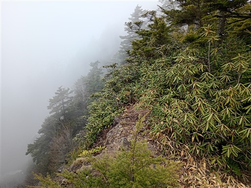
後袈裟丸山に戻ってくる。
今回学んだことは、シャクナゲの藪は堅い、ストックは絶望的に邪魔、
ヤマレコのコースタイムはあてにならない、の3点だ。
恐らく実線、破線などでコースタイムの係数を変えているのだろう。
このコースはなぜか実線だ。歩く人が多いからだろうか？
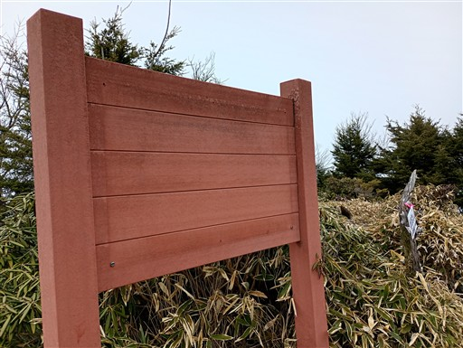
往復登山ではつまらないので、ここから前袈裟丸山を経由して周回コースを歩く。
このコースは風化によって通行止になっているが、歩く人はそこそこいるようだ。
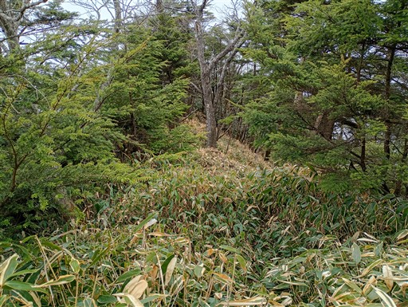
急斜面の笹藪が続く。藪はもう懲り懲りだが仕方がない。
眼下に通過がポイントとなる八反張が見えてきた。
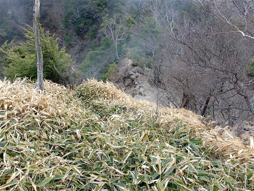
八反張に下り立つ。
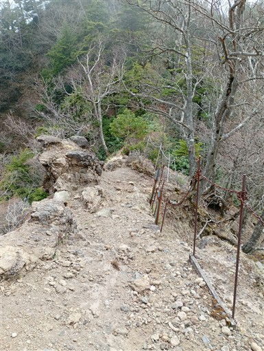
ここから這い上がる場所が、風化していてちょっと危険。
とはいえ、特に問題なく通過できる。
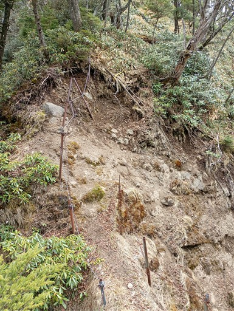
ここから前袈裟丸山まで斜面を登っていく。
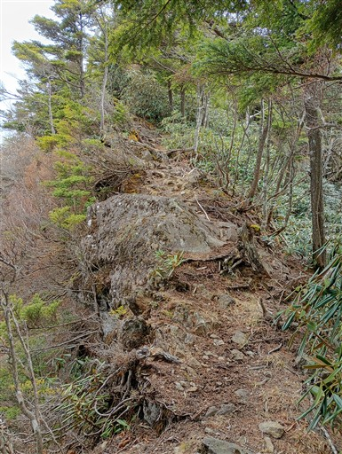
前袈裟丸山山頂手前で展望が広がる。
目の前に見えるのが先ほどまでいた後袈裟丸山だ。
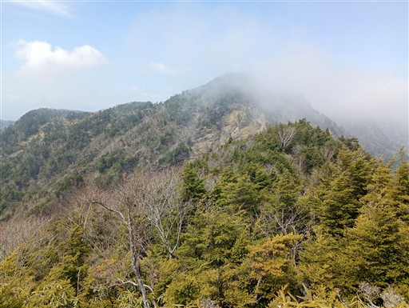
前袈裟丸山山頂に到着。標高1878m。
奥袈裟丸山でなく、こちらを袈裟丸山の本峰とすることもある。
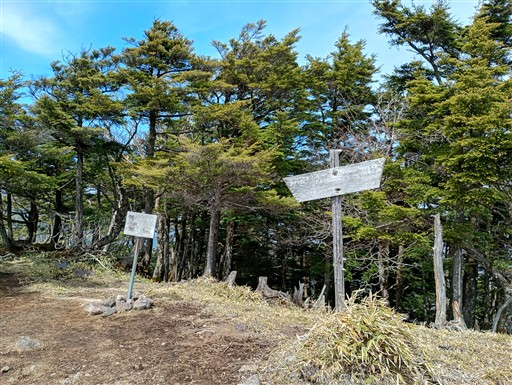
下からの登山道がある人気の山なので、山頂には何人か人がいる。
藪が多い本日の山行の中の憩いの地だ。
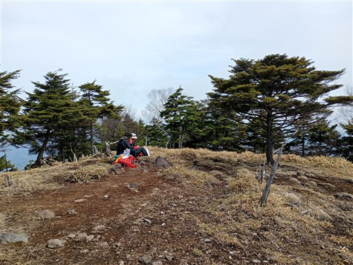
だいぶ雲が取れてきて素晴らしい展望が広がる。
後袈裟丸山～奥袈裟丸山の稜線、奥の丸い頭は皇海山だ。
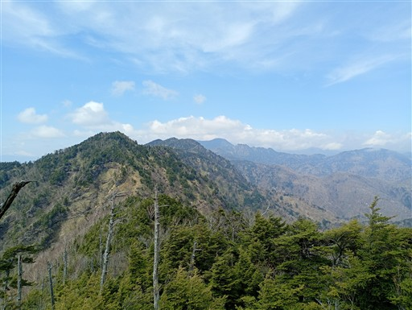
雲は多いが、これだけ展望が広がればまあ上出来だ。
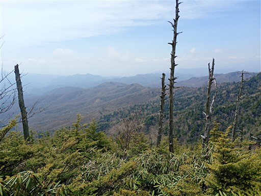
下山道は地図に線が引かれていないバリエーションコース。
どんな藪が現れるのかドキドキしながら歩を進めるが、何とも快適な尾根だ。
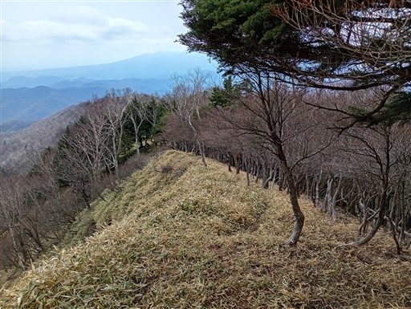
アカヤシオの蕾があちらこちらで見られる。
もう少し標高を下げたら花は現れるだろうか、と気にしながら下る。
とっても快適な尾根。そしてアカヤシオの花も現れる。
先ほどまでが地獄の尾根だったので、余計に天国に感じる。
手前は登りに使った群界尾根。左奥は赤城山だ。
アカヤシオの群生地帯に突入。このアカヤシオ、撮影が非常に難しい。
アップで撮ると群生が見えないし、引いて撮ると花が目立たない。
ここから道は支尾根に入って行く。
分岐点には過剰なほどピンクテープが巻かれている。
この辺りはアカヤシオロードだ。
斜面を彩る見事なアカヤシオ。足を止めて花に見入る。
シャクナゲの花も咲き始めている。
あちらこちらで蕾が見られるので、こちらも咲いたら素晴らしそうだ。
まだまだアカヤシオは続く。
一箇所だけではなく、しばらくアカヤシオ地帯が続く。見事な群落だった。
バリエーションコースではあるが、アカヤシオの花が素晴らしく、歩きやすいこの尾根を
多くの人が訪れる理由がよく分かった。
最後の詰めは痩せ尾根になる。
沢に下りてくる。
この辺りで渡渉。
すぐに林道に出てくる。
車道に到着。ここから2分ほどで駐車場だ。
今回の登山はいろいろなことがあった。
奥袈裟丸山までの稜線はシャクナゲの藪が堅くて苦戦した。
よくよく考えればそこまで酷い藪ではなかったかもしれないが、
事前情報をあまり仕入れていなかったこともあり、少し焦ってしまった。
下山に使った道は歩きやすく、そして何よりアカヤシオの群落が素晴らしすぎたのがうれしい誤算だった。